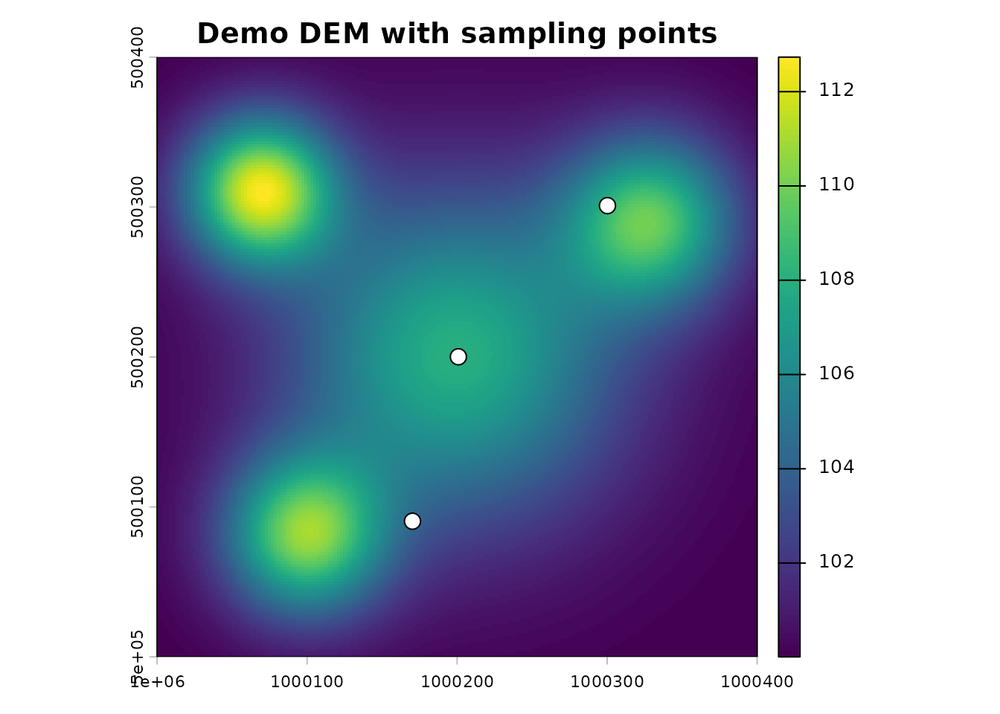
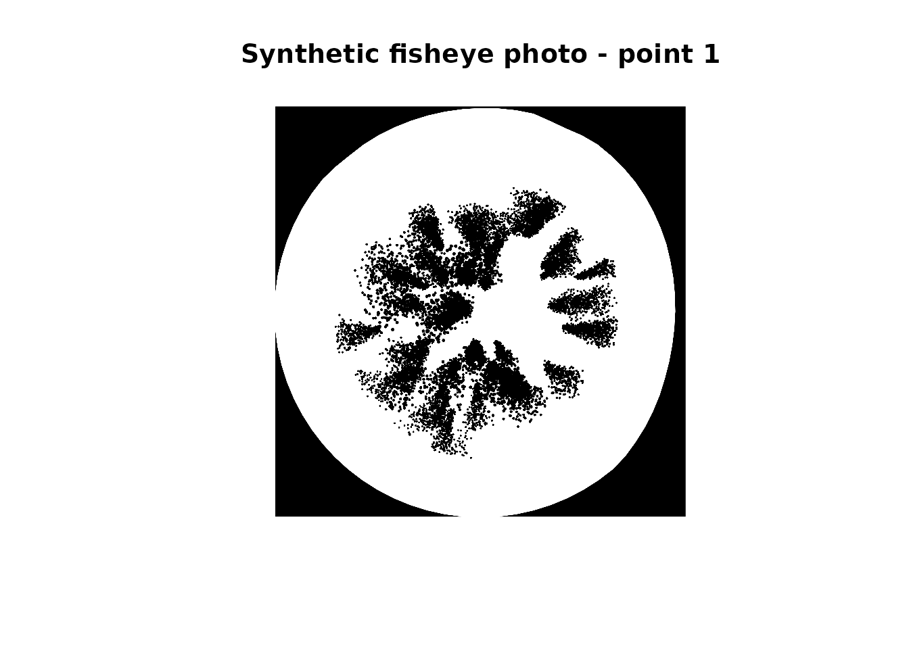

Introduction
gaplightr estimates forest canopy light transmission by combining LiDAR point clouds, terrain data, and hemispherical photography. Given a set of sampling points, it generates synthetic fisheye photographs and computes solar radiation metrics such as canopy openness, transmitted global irradiation, and the light penetration index.
The package is designed for batch workflows on large stream networks.
Each pipeline step writes output files to disk because the intermediate
files are useful on their own and so interrupted runs can resume from
where they left off using resume = TRUE.
Inputs
We will use a small internal demo dataset to demonstrate a basic gaplightr pipeline:
- a 1 km x 1 km DEM,
- three sampling points
- a matching LiDAR tile
library(gaplightr)
library(terra)
#> terra 1.9.1
library(sf)
#> Linking to GEOS 3.12.1, GDAL 3.8.4, PROJ 9.4.0; sf_use_s2() is TRUE
dem_path <- system.file("extdata", "dem.tif", package = "gaplightr")
points_path <- system.file("extdata", "points.geojson", package = "gaplightr")
lidar_dir <- system.file("extdata", "lidar", package = "gaplightr")
output_dir <- tempdir()
dem <- terra::rast(dem_path)
pts <- sf::read_sf(points_path)
terra::plot(dem, main = "Demo DEM with sampling points")
plot(pts, add = TRUE, pch = 21, bg = "white", cex = 1.5)
Step 1: Load points
gla_load_points() validates the CRS, extracts elevation
from the DEM, and assigns a point_id used to name all
downstream output files.
points <- gla_load_points(points_path, dem_path)
#> Assigning sequential point_id (1 to 3).
str(points)
#> sf [3 × 7] (S3: sf/tbl_df/tbl/data.frame)
#> $ elevation: num [1:3] 104 108 108
#> $ point_id : int [1:3] 1 2 3
#> $ x_meters : num [1:3] 1e+06 1e+06 1e+06
#> $ y_meters : num [1:3] 5e+05 5e+05 5e+05
#> $ lon : num [1:3] -126 -126 -126
#> $ lat : num [1:3] 49.5 49.5 49.5
#> $ geometry :sfc_POINT of length 3; first list element: 'XY' num [1:2] 1e+06 5e+05
#> - attr(*, "sf_column")= chr "geometry"
#> - attr(*, "agr")= Factor w/ 3 levels "constant","aggregate",..: NA NA NA NA NA NA
#> ..- attr(*, "names")= chr [1:6] "elevation" "point_id" "x_meters" "y_meters" ...Step 2: Create virtual plots
gla_create_virtual_plots() clips a circular LiDAR plot
around each point and saves one .las file per point.
vp_dir <- file.path(output_dir, "vp")
points <- gla_create_virtual_plots(
points = points,
folder = lidar_dir,
output_dir = vp_dir,
plot_radius = 25,
resume = FALSE
)
#> Creating output directory: /tmp/RtmpxfcQfN/vp
#> Clipping 3 circular plots with radius 25m
#> Processing batch 1/1 (3 plots)
#> Created 3 new plot files
list.files(vp_dir)
#> [1] "1.las" "2.las" "3.las"Step 3: Extract horizons
gla_extract_horizons() calculates the terrain horizon
angle at each azimuth direction and caches the result as a
_horizon.csv file. This mask prevents terrain from being
counted as sky in the fisheye photo.
hz_dir <- file.path(output_dir, "hz")
points <- gla_extract_horizons(
points = points,
dem_path = dem_path,
output_dir = hz_dir,
parallel = FALSE,
resume = FALSE
)
#> Extracting horizons for 3 locations using terra method...
#> Loading DEM and validating CRS...
#> Computing DEM maximum elevation for early termination...
#> DEM max elevation: 112.7 m
#> Using sequential processing
#> Horizon extraction complete, DEM removed from memory
list.files(hz_dir)
#> [1] "1_horizon.csv" "2_horizon.csv" "3_horizon.csv"The horizon_mask list-column stores polar-projected
horizon coordinates for each point:
str(points$horizon_mask[[1]])
#> List of 4
#> $ azimuth : num [1:72] 0 5 10 15 20 25 30 35 40 45 ...
#> $ horizon_height: num [1:72] 0 0 0 0 0 ...
#> $ x_msk : num [1:72] -1.57 -1.56 -1.55 -1.52 -1.48 ...
#> $ y_msk : num [1:72] 0 0.137 0.273 0.407 0.537 ...Step 4: Create fisheye photos
gla_create_fisheye_photos() projects the clipped LiDAR
onto a hemispherical plane, overlays the horizon mask, and writes a
.bmp image per point.
photo_dir <- file.path(output_dir, "photos")
points <- gla_create_fisheye_photos(
points = points,
output_dir = photo_dir,
camera_height_m = 1.37,
min_dist = 1,
max_dist = 70,
img_res = 2800,
max_cex = 0.5,
min_cex = 0.03,
pointsize = 10,
dpi = 1200,
parallel = FALSE,
resume = FALSE
)
#> Creating output directory: /tmp/RtmpxfcQfN/photos
#> Processing 3 fisheye photos...#> Completed processing 3 new fisheye photos
list.files(photo_dir)
#> [1] "1_ps10_cex0pt500000-0pt030000_dist1-70_1200dpi_2800px_equidistant.bmp"
#> [2] "2_ps10_cex0pt500000-0pt030000_dist1-70_1200dpi_2800px_equidistant.bmp"
#> [3] "3_ps10_cex0pt500000-0pt030000_dist1-70_1200dpi_2800px_equidistant.bmp"
photo_file <- points$fisheye_photo_path[[1]]
img <- imager::load.image(photo_file)
plot(img, axes = FALSE, main = "Synthetic fisheye photo - point 1")
Step 5: Process for solar radiation
gla_process_fisheye_photos() reads each fisheye photo,
computes gap fractions by sky ring and sector, and integrates solar
irradiance over the specified day range. For this vignette, we use a
short illustrative window (Julian days 172–182, i.e., around the summer
solstice) and a coarser time step to keep computation fast during
automated checks.
results <- gla_process_fisheye_photos(
points = points,
clearsky_coef = 0.65,
time_step_min = 10,
day_start = 172,
day_end = 182,
day_res = 2,
elev_res = 5,
azi_res = 5,
Kt = 0.54,
parallel = FALSE
)
#> Processing 3 fisheye photos for solar radiation...
#> Completed processing 3 fisheye photos
str(results)
#> sf [3 × 23] (S3: sf/tbl_df/tbl/data.frame)
#> $ fisheye_photo_path : chr [1:3] "/tmp/RtmpxfcQfN/photos/1_ps10_cex0pt500000-0pt030000_dist1-70_1200dpi_2800px_equidistant.bmp" "/tmp/RtmpxfcQfN/photos/2_ps10_cex0pt500000-0pt030000_dist1-70_1200dpi_2800px_equidistant.bmp" "/tmp/RtmpxfcQfN/photos/3_ps10_cex0pt500000-0pt030000_dist1-70_1200dpi_2800px_equidistant.bmp"
#> $ elevation : num [1:3] 104 108 108
#> $ point_id : int [1:3] 1 2 3
#> $ x_meters : num [1:3] 1e+06 1e+06 1e+06
#> $ y_meters : num [1:3] 5e+05 5e+05 5e+05
#> $ lon : num [1:3] -126 -126 -126
#> $ lat : num [1:3] 49.5 49.5 49.5
#> $ las_files : chr [1:3] "/tmp/RtmpxfcQfN/vp/1.las" "/tmp/RtmpxfcQfN/vp/2.las" "/tmp/RtmpxfcQfN/vp/3.las"
#> $ horizon_mask :List of 3
#> ..$ :List of 4
#> .. ..$ azimuth : num [1:72] 0 5 10 15 20 25 30 35 40 45 ...
#> .. ..$ horizon_height: num [1:72] 0 0 0 0 0 ...
#> .. ..$ x_msk : num [1:72] -1.57 -1.56 -1.55 -1.52 -1.48 ...
#> .. ..$ y_msk : num [1:72] 0 0.137 0.273 0.407 0.537 ...
#> ..$ :List of 4
#> .. ..$ azimuth : num [1:72] 0 5 10 15 20 25 30 35 40 45 ...
#> .. ..$ horizon_height: num [1:72] 0 0 0 0 0 ...
#> .. ..$ x_msk : num [1:72] -1.57 -1.56 -1.55 -1.52 -1.48 ...
#> .. ..$ y_msk : num [1:72] 0 0.137 0.273 0.407 0.537 ...
#> ..$ :List of 4
#> .. ..$ azimuth : num [1:72] 0 5 10 15 20 25 30 35 40 45 ...
#> .. ..$ horizon_height: num [1:72] 0 0 0 0 0 0 0 0 0 0 ...
#> .. ..$ x_msk : num [1:72] -1.57 -1.56 -1.55 -1.52 -1.48 ...
#> .. ..$ y_msk : num [1:72] 0 0.137 0.273 0.407 0.537 ...
#> $ canopy_openness_pct : num [1:3] 71.2 74.3 77.4
#> $ mean_daily_extraterrestrial_irradiance_Wm2: num [1:3] 483 483 483
#> $ mean_daily_direct_irradiation_MJm2d : num [1:3] 11.8 11.8 11.8
#> $ mean_daily_diffuse_irradiation_MJm2d : num [1:3] 10.8 10.8 10.8
#> $ mean_daily_global_irradiation_MJm2d : num [1:3] 22.5 22.5 22.5
#> $ transmitted_direct_irradiation_MJm2d : num [1:3] 5.24 4.79 6.51
#> $ transmitted_diffuse_irradiation_MJm2d : num [1:3] 6.34 6.49 7.05
#> $ transmitted_global_irradiation_MJm2d : num [1:3] 11.6 11.3 13.6
#> $ transmitted_direct_irradiation_pct : num [1:3] 44.6 40.8 55.4
#> $ transmitted_diffuse_irradiation_pct : num [1:3] 58.8 60.3 65.5
#> $ transmitted_global_irradiation_pct : num [1:3] 51.4 50.1 60.2
#> $ subcanopy_solar_radiation_MJm2d : num [1:3] 11.6 11.3 13.6
#> $ light_penetration_index : num [1:3] 0.514 0.501 0.602
#> $ geometry :sfc_POINT of length 3; first list element: 'XY' num [1:2] 1e+06 5e+05
#> - attr(*, "sf_column")= chr "geometry"
#> - attr(*, "agr")= Factor w/ 3 levels "constant","aggregate",..: NA NA NA NA NA NA NA NA NA NA ...
#> ..- attr(*, "names")= chr [1:22] "fisheye_photo_path" "elevation" "point_id" "x_meters" ...Next steps
For larger datasets, enable parallel processing by configuring a
future plan before any pipeline step:
future::plan(future::multisession, workers = 4)
points <- gla_extract_horizons(
points = points,
dem_path = dem_path,
output_dir = hz_dir,
parallel = TRUE,
resume = TRUE # skip points already processed
)The resume = TRUE default means you can safely interrupt
and restart any batch step without reprocessing completed points.